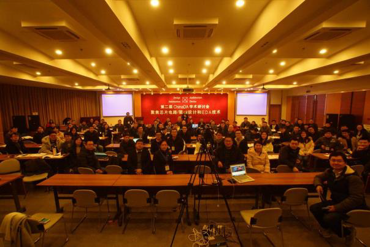
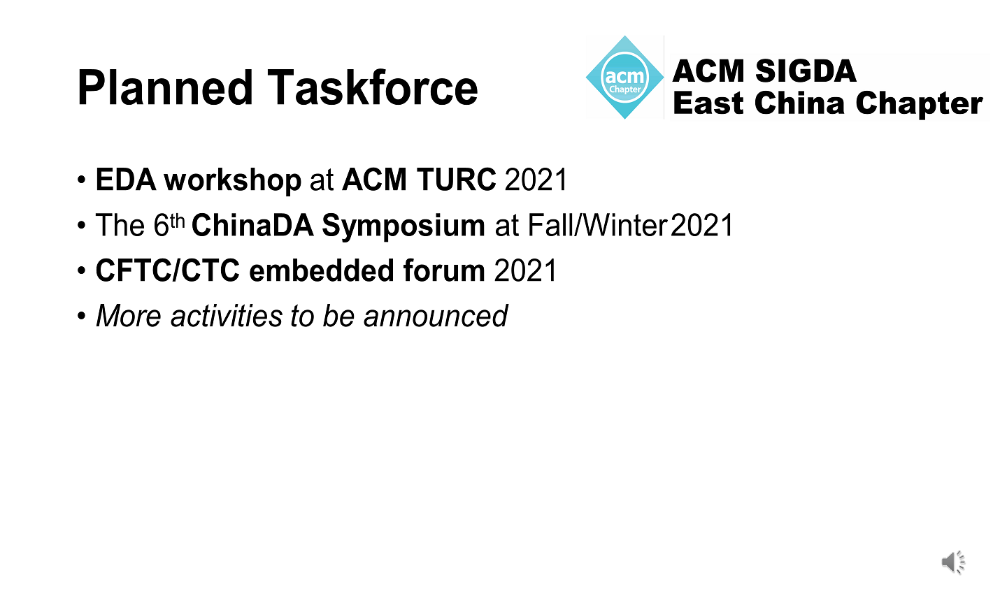
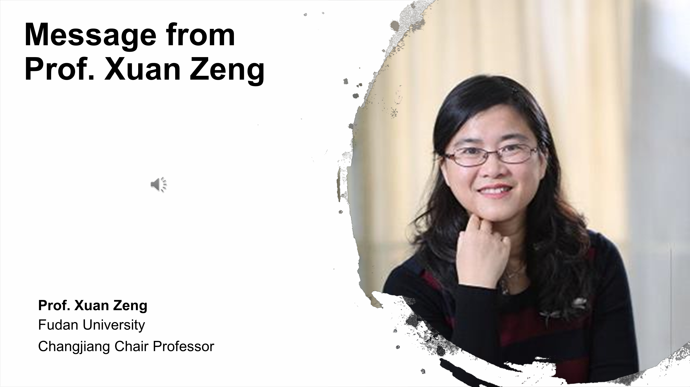

第五届ACM SIGDA China于2019年在上海成功召开
ACM SIGDA China组委会 2021-03-30
2019年，ACM SIGDA China成功在上海举办线上和线下会议，其线上会议直播点击量超过8000次。

2021年ACM SIGDA China会议即将于2021年秋冬季召开

专家寄语1。

专家寄语2。

专家寄语3。

国际计算机学会设计自动化专业委员会中国华东区分会 （ACM Special Interest Group on Design Automation East China，即 ACM SIGDA East China）是主要面向设计自动化领域的专业委员会，主要为电子设计自动化、芯片设计、电路和系统等 相关领域的专家学者和工业界研发人员提供交流的平台。委员会致力于将先进的设计自动化技术推广至各大应用领域，促进产学研合作。交流领域包括但不限于： 电子设计自动化，集成电路设计，电路和系统，物联网，智能系统及相关理论与应用领域等。 ACM SIGDA East China 的成立将极大地促进设计自动化领域学术研究的进步，提升我国在相关领域的创新水平。 ACM SIGDA East China 的发展宗旨是引领计算机学术界与工业界紧密结合的科研创新，创建计算机学术界与工业界科 研技术交流、服务与应用平台。
欢迎学术界、产业界的专家、学者的加盟！